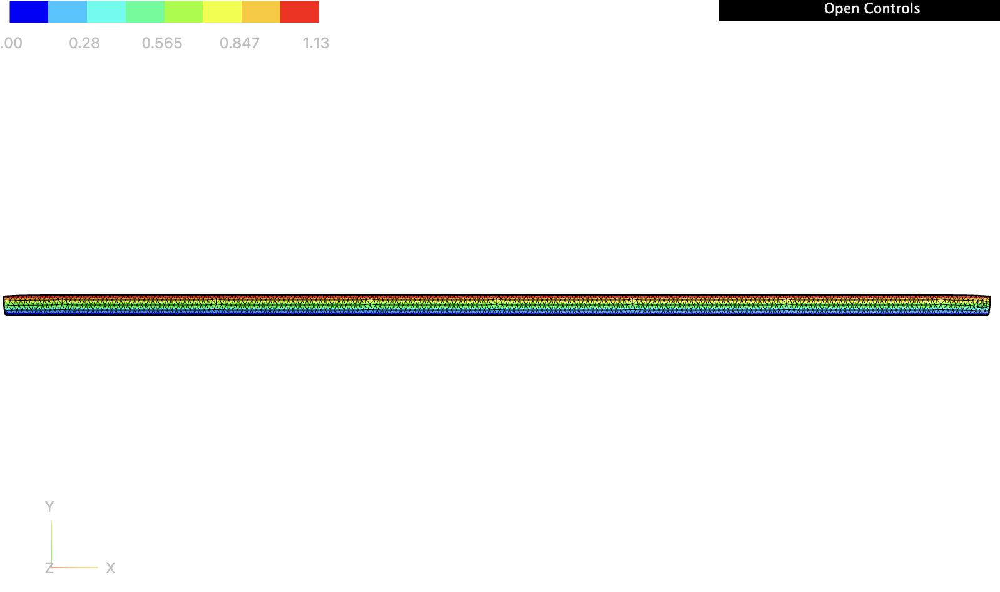
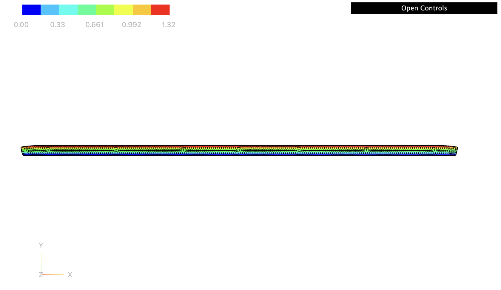
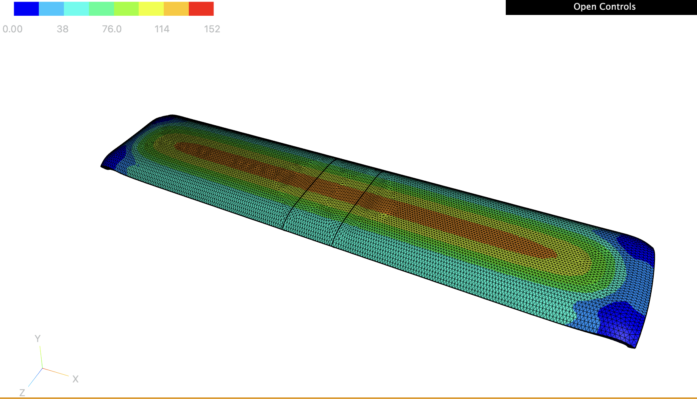
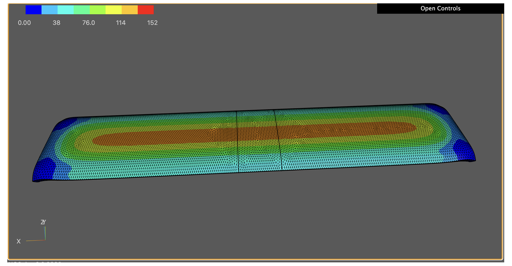
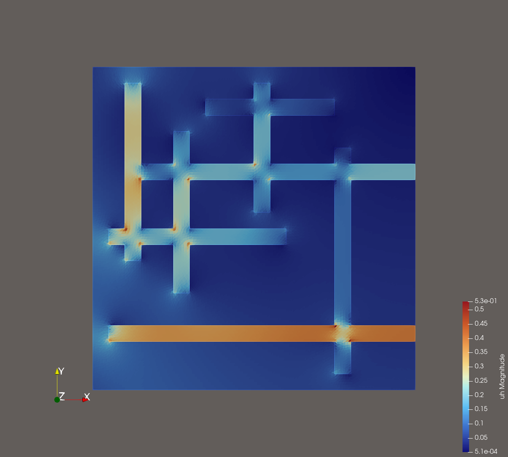
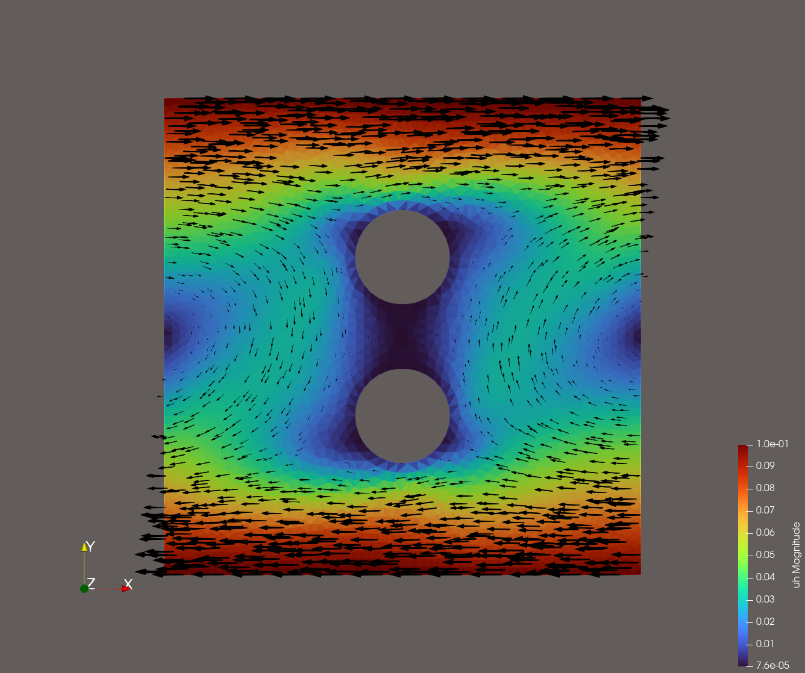

Pedro Hernández-Llanos, Ph.D.
Welcome to my profile! I am a pure and applied mathematician whose research focuses on the interaction of the Calculus of Variations, Partial Differential Equations (PDEs), and Solid Mechanics, with applications to Materials Science and Continuum Mechanics. The use of variational methods is a common theme throughout my work.
¡Bienvenido a mi perfil! Soy un matemático puro y aplicado cuya investigación se centra en la interacción entre el Cálculo de Variaciones, las Ecuaciones en Derivadas Parciales (EDP) y la Mecánica de Sólidos, con aplicaciones a la Ciencia de Materiales y la Mecánica del Continuo. El uso de métodos variacionales es un tema común a lo largo de mi trabajo.
Specifically, I specialize in the Homogenization of problems arising in the context of PDEs with Thin structures and Multistructures. I am interested in developing mathematical theories for the behaviour of new materials via simultaneous homogenization and dimension reduction using multiscale convergence, $\Gamma$-convergence, and the periodic unfolding method by combining variational techniques, operator theory, and geometric measure theory. These techniques find direct applications in Mechanical and Electrical Engineering, as well as Fluid Flow, to name a few.
En particular, me especializo en la Homogeneización de problemas que surgen en el contexto de EDP con estructuras delgadas y multiestructuras. Me interesa desarrollar teorías matemáticas para el comportamiento de nuevos materiales mediante homogeneización y reducción de dimensión simultáneas, usando convergencia multiescala, $\Gamma$-convergencia y el método de desdoblamiento periódico, combinando técnicas variacionales, teoría de operadores y teoría geométrica de la medida. Estas técnicas tienen aplicaciones directas en Ingeniería Mecánica y Eléctrica, así como en Flujo de Fluidos, entre otras.
Alongside my theoretical research, I have experience in Computational Mechanics and Numerical Methods for PDEs, particularly the Finite Element Method (FEM). I have worked with scientific computing tools including Python, Matlab, Julia, and the finite element software NGSolve, applying numerical techniques to the simulation and analysis of complex physical systems. My current interests also include computational modeling of nonlinear materials and soft matter systems, where analytical and numerical approaches are combined to investigate stability phenomena and multiscale behavior.
Junto con mi investigación teórica, tengo experiencia en Mecánica Computacional y Métodos Numéricos para EDP, en particular el Método de Elementos Finitos (MEF). He trabajado con herramientas de cómputo científico como Python, Matlab, Julia y el software de elementos finitos NGSolve, aplicando técnicas numéricas a la simulación y el análisis de sistemas físicos complejos. Mis intereses actuales incluyen también el modelado computacional de materiales no lineales y de sistemas de materia blanda, donde se combinan enfoques analíticos y numéricos para investigar fenómenos de estabilidad y comportamiento multiescala.
🔬 Research Interests🔬 Intereses de investigación
- Solid Mechanics.
- Material Sciences.
- Partial Differential Equations (PDEs) in Mechanics, Electrical Engineering, and Fluid Mechanics.
- Calculus of Variations, with applications to multistructures and junctions.
- Nonlinear hyperelastic, poroelastic, magnetoelastic, and ferroelectric materials.
- Hydrogels and soft materials.
- Mecánica de Sólidos.
- Ciencia de Materiales.
- Ecuaciones en Derivadas Parciales (EDP) en Mecánica, Ingeniería Eléctrica y Mecánica de Fluidos.
- Cálculo de Variaciones, con aplicaciones a multiestructuras y uniones.
- Materiales no lineales hiperelásticos, poroelásticos, magnetoelásticos y ferroeléctricos.
- Hidrogeles y materiales blandos.
📝 Selected Publications📝 Publicaciones seleccionadas
Peer-Reviewed JournalsRevistas con revisión por pares
-
M. Bužančić, P. Hernández-Llanos, I. Velčić, and J. Žubrinić, “Poroelastic plate model obtained by simultaneous homogenization and dimension reduction,” Journal of Evolution Equations, vol. 26:12, pp. 1–88, 2026.
Main contributionsContribuciones principales
The starting point of our analysis is a coupled system of linear elasticity and Stokes equation. We consider two small parameters: the thickness h of the thin plate and the pore scale ε(h). The obtained model generalizes the poroelastic plate model derived by A. Mikelić et. al. in 2015.
El punto de partida de nuestro análisis es un sistema acoplado de elasticidad lineal y la ecuación de Stokes. Consideramos dos parámetros pequeños: el espesor h de la placa delgada y la escala de poros ε(h). El modelo obtenido generaliza el modelo de placa poroelástica derivado por A. Mikelić et al. en 2015.
-
L. Carrero and P. Hernández-Llanos, “Kirchhoff-type equations involving the fractional (p, q)−laplacian,” Journal of Mathematical Analysis and Applications, vol. 558, 130449, pp. 1–15, 2026.
Main contributionsContribuciones principales
Using variational methods, we establish the existence of at least two weak solutions. The first is obtained via direct minimization and the second by the Mountain Pass Theorem.
Mediante métodos variacionales, establecemos la existencia de al menos dos soluciones débiles. La primera se obtiene por minimización directa y la segunda mediante el Teorema del Paso de Montaña.
-
T. Durante, L. Faella, P. Hernández-Llanos, and R. Prakash, “A homogenized bending shell theory for multiscale materials from 3D nonlinear elasticity,” Journal of Elasticity, 2025.
Main contributionsContribuciones principales
We combine homogenization and dimension reduction to derive shell theories from 3D nonlinear elasticity with three small parameters: two material scales and the thickness.
Combinamos homogeneización y reducción de dimensión para derivar teorías de láminas a partir de la elasticidad no lineal 3D con tres parámetros pequeños: dos escalas materiales y el espesor.
-
P. Hernández-Llanos, “Asymptotic analysis of a junction of hyperelastic rods,” Asymptotic Analysis, vol. 126, no. 3-4, pp. 303–322, 2022.
Main contributionsContribuciones principales
I obtain a 1D asymptotic model for a junction of thin hyperelastic rods using Γ-convergence, showing weak convergence in Sobolev spaces.
Obtengo un modelo asintótico 1D para una unión de varillas hiperelásticas delgadas mediante Γ-convergencia, demostrando convergencia débil en espacios de Sobolev.
-
L. Carbone, A. Gaudiello, and P. Hernández-Llanos, “T-junction of ferroelectric wires,” ESAIM: Mathematical Modelling and Numerical Analysis (ESAIM: M2AN), vol. 54, no. 5, pp. 1429–1463, 2020.
Main contributionsContribuciones principales
Analysis of junction phenomena for orthogonal joined ferroelectric wires. We show that while the limit problems remain non-convex, the nonlocality disappears.
Análisis de fenómenos de unión para cables ferroeléctricos unidos ortogonalmente. Mostramos que, aunque los problemas límite siguen siendo no convexos, la no localidad desaparece.
-
P. Hernández-Llanos, Y. Quintana, and A. Urieles, “About extensions of generalized apostol-type polynomials,” Results in Mathematics, vol. 68, pp. 203–225, 2015.
Main contributionsContribuciones principales
New results concerning extensions of generalized Apostol-type polynomials, connecting them with Stirling numbers and Jacobi polynomials.
Nuevos resultados sobre extensiones de los polinomios generalizados de tipo Apostol, conectándolos con los números de Stirling y los polinomios de Jacobi.
Under Review / PreprintsEn revisión / Preprints
- Stability surface for confined hydrogel layer on substrates (withcon D. Henao, C. Roman, andy X. Lamy) – (2026, To be submitted toPor enviar a SIAM J. Appl. Anal.).
- Junction of ferroelectric thin cylinders (withcon L. Faella andy R. Prakash) – Submitted toEnviado a ESAIM: COCV.
- Homogenized moderately wrinkled shell theory from 3d koiter's linear elasticity (withcon R. Mahadevan andy R. Prakash) – Submitted toEnviado a Mathematical Models and Methods in Applied Sciences.
In PreparationEn preparación
- P. Hernández-Llanos andy S. Throm, “Derivation of the amplitude equation for the space-fractional Swift-Hohenberg equation via evolutionary Γ-convergence,” In preparationEn preparación, 2026.
- C. Mora-Corral, L. D’Elia andy P. Hernández-Llanos, “About von Kármán theories for a magnetoelastic composite plate obtained by simultaneous homogenization and dimension reduction,” In preparationEn preparación, 2026.
- P. Hernández-Llanos, “Poroelastic shell model obtained by simultaneous homogenization and dimension reduction,” In preparationEn preparación, 2026.
- P. Hernández-Llanos, “A model for a gel bonded to a curved rigid substrate,” In preparationEn preparación, 2026.
🎓 Education🎓 Formación académica
-
Ph.D. in Mathematics | Universidad de Concepción, Chile (2015 – 2020)
Thesis: “Variational limits of problems in junction domains for Ferroelectric and Hyperelastic materials by reduction of dimension”
Supervisors: Prof. Rajesh Mahadevan, Prof. Ravi Prakash, Prof. Antonio Gaudiello, and Prof. Luciano Carbone.
Funding: National Agency for Research and Development of Chile (ANID), Doctoral Fellowship.
Honors: Grade 4.7/5.0 (1st in thesis, 2nd overall). -
M.Sc. in Mathematical Sciences | Universidad del Atlántico, Colombia (2011 – 2014)
Thesis: “On new families of generalized Apostol-type polynomials and their properties”
Supervisor: Prof. Alejandro Urieles Guerrero. -
Bachelor’s Degree in High School Education (Major in Mathematics) | Universidad del Atlántico, Colombia (2005 – 2010)
Honors: Grade 4.34/5.0 (1st overall).
Awards: Undergraduate prize for best student of promotion with M.Sc. Fellowship.
-
Doctorado en Matemáticas | Universidad de Concepción, Chile (2015 – 2020)
Tesis: “Variational limits of problems in junction domains for Ferroelectric and Hyperelastic materials by reduction of dimension”
Directores: Prof. Rajesh Mahadevan, Prof. Ravi Prakash, Prof. Antonio Gaudiello y Prof. Luciano Carbone.
Financiamiento: Agencia Nacional de Investigación y Desarrollo de Chile (ANID), Beca de Doctorado.
Distinciones: Nota 4,7/5,0 (1.º en la tesis, 2.º en el promedio general). -
Maestría en Ciencias Matemáticas | Universidad del Atlántico, Colombia (2011 – 2014)
Tesis: “On new families of generalized Apostol-type polynomials and their properties”
Director: Prof. Alejandro Urieles Guerrero. -
Licenciatura en Educación Media (Énfasis en Matemáticas) | Universidad del Atlántico, Colombia (2005 – 2010)
Distinciones: Nota 4,34/5,0 (1.º del programa).
Premios: Premio al mejor estudiante de la promoción con beca para estudios de maestría.
💼 Academic Trajectory and Projects💼 Trayectoria académica y proyectos
-
Guest Postdoctoral Researcher | Umeå University, Sweden (2026 – Present).
Research on the derivation of the amplitude equation for the space-fractional Swift-Hohenberg equation via evolutionary $\Gamma$-convergence alongside Prof. Sebastian Throm. -
Postdoctoral Researcher | Universidad de O'Higgins (UOH), Chile (2023 – 2026).
Principal Investigator of the project Fondecyt Postdoctoral ANID N° 3230202, focused on two-dimensional models of thin structures with magnetoelasticity, poroelasticity, and rigid gel properties alongside Prof. Duvan Henao. -
Postdoctoral Research Associate | University of Zagreb, Croatia (2021 – 2022).
Project funded by the Croatian Science Foundation (HRZZ) centered on poroelastic plates via simultaneous homogenization and dimension reduction alongside Prof. Igor Velčić.
-
Investigador Postdoctoral Invitado | Umeå University, Suecia (2026 – Presente).
Investigación sobre la derivación de la ecuación de amplitud para la ecuación de Swift-Hohenberg fraccionaria en espacio mediante $\Gamma$-convergencia evolutiva, junto al Prof. Sebastian Throm. -
Investigador Postdoctoral | Universidad de O'Higgins (UOH), Chile (2023 – 2026).
Investigador Principal del proyecto Fondecyt Postdoctoral ANID N° 3230202, enfocado en modelos bidimensionales de estructuras delgadas con magnetoelasticidad, poroelasticidad y propiedades de gel rígido, junto al Prof. Duvan Henao. -
Investigador Postdoctoral Asociado | University of Zagreb, Croacia (2021 – 2022).
Proyecto financiado por la Fundación Croata de Ciencia (HRZZ), centrado en placas poroelásticas mediante homogeneización y reducción de dimensión simultáneas, junto al Prof. Igor Velčić.
🏆 Grants as Principal Investigator (PI) and Awards🏆 Proyectos como Investigador Principal (PI) y premios
- 2025 Umeå Universitet — Horizon Europe Marie Skłodowska-Curie Actions Seal of Excellence Umeå Universitet — Horizon Europe Marie Skłodowska-Curie Actions Sello de Excelencia Call HORIZON-MSCA-2025-PF-01-01, MSCA Postdoctoral Fellowships 2025. Project proposal 101274133-VAMOS. Total score: 86.4% (threshold: 70/100). Seal of Excellence. Convocatoria HORIZON-MSCA-2025-PF-01-01, MSCA Postdoctoral Fellowships 2025. Propuesta de proyecto 101274133-VAMOS. Puntaje total: 86,4 % (umbral: 70/100). Sello de Excelencia.
- 15/04/2023 – 14/04/2026 National Agency for Research and Development of Chile (ANID) — Fondecyt Postdoctoral Fellowship 2023 Agencia Nacional de Investigación y Desarrollo de Chile (ANID) — Beca Fondecyt Postdoctoral 2023 Grant No. 3230202. Awarded on the basis of academic merit. Valued at 30,000 USD per annum. Proyecto N.º 3230202. Otorgada por mérito académico. Valorada en 30.000 USD anuales.
- 20/06/2025 – 19/07/2025 Instituto de Ciencias Matemáticas (ICMAT), Universidad Autónoma de Madrid, Spain Instituto de Ciencias Matemáticas (ICMAT), Universidad Autónoma de Madrid, España Grant “Puentes Matemáticos con Latinoamérica” 2025. Awarded on the basis of academic merit. Valued at 1,100 USD per month. Beca “Puentes Matemáticos con Latinoamérica” 2025. Otorgada por mérito académico. Valorada en 1.100 USD mensuales.
- 02/10/2021 – 30/09/2022 Croatian Science Foundation (HRZZ) Fundación Croata de Ciencia (HRZZ) “Homogenization and dimension reduction and Structural Optimization in continuum mechanics”. Awarded as Associate Postdoctoral Fellow at the Faculty of Electrical Engineering and Computing (FER), University of Zagreb, on the basis of academic merit. Valued at 1,800 USD per month. “Homogenization and dimension reduction and Structural Optimization in continuum mechanics”. Otorgada como Investigador Postdoctoral Asociado en la Facultad de Ingeniería Eléctrica y Computación (FER), Universidad de Zagreb, por mérito académico. Valorada en 1.800 USD mensuales.
- 2015 – 2020 National Agency for Research and Development of Chile (ANID) — Fondecyt National Doctoral Fellowship 2015 Agencia Nacional de Investigación y Desarrollo de Chile (ANID) — Beca Nacional de Doctorado Fondecyt 2015 Grant No. 21150001. Awarded on the basis of academic merit. Valued at 12,065 USD per annum. Proyecto N.º 21150001. Otorgada por mérito académico. Valorada en 12.065 USD anuales.
- 2015 Universidad del Atlántico, Colombia — Impacto Caribe Project Universidad del Atlántico, Colombia — Proyecto Impacto Caribe “About generalized Apostol-type polynomials”, number IC-002627-2015. Awarded on the basis of academic merit. Valued at 60,000,000 COP per annum. “About generalized Apostol-type polynomials”, número IC-002627-2015. Otorgado por mérito académico. Valorado en 60.000.000 COP anuales.
- 2014 Universidad del Atlántico, Colombia — Young Researchers Project 2014 (Colciencias) Universidad del Atlántico, Colombia — Proyecto Jóvenes Investigadores 2014 (Colciencias) “Existence of Oscillations in Chua’s Circuit.” Administrative Department of Science of Colombia (Colciencias). Awarded on the basis of academic merit. Valued at 21,600,000 COP per annum. “Existence of Oscillations in Chua’s Circuit.” Departamento Administrativo de Ciencia de Colombia (Colciencias). Otorgado por mérito académico. Valorado en 21.600.000 COP anuales.
- 2011 – 2014 Universidad del Atlántico, Colombia — Best bachelor student prize Universidad del Atlántico, Colombia — Premio al mejor estudiante de pregrado Full fellowship to pursue a Master’s degree. Awarded on the basis of academic merit. Free tuition throughout the entire course. Beca completa para cursar estudios de maestría. Otorgado por mérito académico. Matrícula gratuita durante todo el programa.
- 2005 – 2010 Universidad del Atlántico, Colombia — Best bachelor student grades by semester prize Universidad del Atlántico, Colombia — Premio a las mejores notas de pregrado por semestre Awarded on the basis of academic merit. Free tuition throughout the entire course. Otorgado por mérito académico. Matrícula gratuita durante todo el programa.
✈️ Research Trips✈️ Visitas de investigación
- 26/07/2025 – 23/09/2025 Umeå University, Department of Mathematics and Mathematical Statistics, Sweden Umeå University, Departamento de Matemáticas y Estadística Matemática, Suecia I worked with project partner Prof. Sebastian Throm. The aim of this visit was to finish our paper “Derivation of the amplitude equation for the space-fractional Swift-Hohenberg equation via evolutionary Γ-convergence”. Trabajé con el socio del proyecto, Prof. Sebastian Throm. El objetivo de esta visita fue terminar nuestro artículo “Derivation of the amplitude equation for the space-fractional Swift-Hohenberg equation via evolutionary Γ-convergence”.
- 20/06/2025 – 19/07/2025 Universidad Autónoma de Madrid, Spain — Instituto de Ciencias Matemáticas (ICMAT) Universidad Autónoma de Madrid, España — Instituto de Ciencias Matemáticas (ICMAT) I worked with project partner Prof. Carlos Mora-Corral. The aim of this visit was to finish my research on the von Kármán model for nonlinear magnetoelastic plates via simultaneous homogenization and dimension reduction. Trabajé con el socio del proyecto, Prof. Carlos Mora-Corral. El objetivo de esta visita fue terminar mi investigación sobre el modelo de von Kármán para placas magnetoelásticas no lineales mediante homogeneización y reducción de dimensión simultáneas.
- 18/09/2024 – 07/02/2025 Umeå University, Department of Mathematics and Mathematical Statistics, Sweden Umeå University, Departamento de Matemáticas y Estadística Matemática, Suecia I worked with project partner Prof. Sebastian Throm. This visit started the writing of our paper “Derivation of the amplitude equation for the space-fractional Swift-Hohenberg equation via evolutionary Γ-convergence”. Trabajé con el socio del proyecto, Prof. Sebastian Throm. Esta visita dio inicio a la redacción de nuestro artículo “Derivation of the amplitude equation for the space-fractional Swift-Hohenberg equation via evolutionary Γ-convergence”.
- 05/11/2018 – 31/01/2019 Dipartimento di Matematica e Applicazioni Renato Caccioppoli, Università degli Studi di Napoli Federico II, Naples, Italy Dipartimento di Matematica e Applicazioni Renato Caccioppoli, Università degli Studi di Napoli Federico II, Nápoles, Italia I worked with Prof. Antonio Gaudiello and Prof. Luciano Carbone. This visit led to the articles “T-junction of ferroelectric wires” and “Junction of ferroelectric thin cylinders” listed above. Trabajé con el Prof. Antonio Gaudiello y el Prof. Luciano Carbone. Esta visita dio lugar a los artículos “T-junction of ferroelectric wires” y “Junction of ferroelectric thin cylinders” listados arriba.
🛠️ Scientific Computing and Tools🛠️ Cómputo científico y herramientas
I have experience developing scientific code applied to solving and simulating PDEs, variational methods, and dimensional reduction problems:
Tengo experiencia desarrollando código científico aplicado a la resolución y simulación de EDP, métodos variacionales y problemas de reducción de dimensión:
- Languages and Software: Advanced in Python, FreeFem++, FEniCS, Matlab, Julia, R, Mathematica, and Wolfram Language.
- Scientific Typography: Professional editing and typesetting in LaTeX and TeX.
- Lenguajes y software: Nivel avanzado en Python, FreeFem++, FEniCS, Matlab, Julia, R, Mathematica y Wolfram Language.
- Tipografía científica: Edición y composición profesional en LaTeX y TeX.
💻 Codes💻 Códigos
Selected numerical simulations developed to solve and validate the variational and PDE models arising in my research, implemented in Python, FreeFem++, FEniCS, Matlab, Julia, R, Mathematica, and Wolfram.
Simulaciones numéricas seleccionadas, desarrolladas para resolver y validar los modelos variacionales y de EDP que surgen en mi investigación, implementadas en Python, FreeFem++, FEniCS, Matlab, Julia, R, Mathematica y Wolfram.
GelStableConfiguration.py
Finite-element computation of stable equilibrium configurations of a confined hydrogel layer bonded to a rigid substrate, solved via an incremental softening (continuation) scheme with Newton's method under a penalty-based non-penetration constraint.
Cálculo por elementos finitos de configuraciones de equilibrio estables de una capa de hidrogel confinada y adherida a un sustrato rígido, resuelto mediante un esquema incremental de ablandamiento (continuación) con el método de Newton bajo una restricción de no penetración por penalización.

Successful computation of the stable configuration for the gel for $L=90.00$ mm, $d=1.62$ mm, $\phi_0=0.20$ and $\overline{\mu}=-0.0005$ under zero-displacement Dirichlet boundary conditions ($\mathbf{u}=\mathbf{0}$) along the bonded and debonded interfaces, supplemented by a penalty-based non-penetration condition ($y+u_y \ge 0$) at the bottom surface. The nonlinear problem is solved via an incremental softening scheme across 16 load steps. Newton's method is executed with a convergence tolerance of tol $=10^{-3}$ (and tol $=10^{-6}$ for the final step), allowing a maximum of 100 Newton iterations per step and up to 500 iterations for the final stage. The color bar is adjusted to show in red the magnitude of the maximum displacement, which is $1.13$ mm. This corresponds to the solution obtained when using the swelling equilibrium of the gel with a shear modulus of $0.1372$ MPa as the initial approximation for a gel with shear modulus of $0.13721349978333722$ MPa.
Cálculo exitoso de la configuración estable del gel para $L=90.00$ mm, $d=1.62$ mm, $\phi_0=0.20$ y $\overline{\mu}=-0.0005$, con condiciones de frontera de Dirichlet de desplazamiento nulo ($\mathbf{u}=\mathbf{0}$) en las interfaces adherida y desprendida, complementadas con una condición de no penetración por penalización ($y+u_y \ge 0$) en la superficie inferior. El problema no lineal se resuelve mediante un esquema de ablandamiento incremental en 16 pasos de carga. El método de Newton se ejecuta con una tolerancia de convergencia tol $=10^{-3}$ (y tol $=10^{-6}$ en el paso final), permitiendo un máximo de 100 iteraciones de Newton por paso y hasta 500 iteraciones en la etapa final. La barra de colores se ajusta para mostrar en rojo la magnitud del desplazamiento máximo, que es de $1.13$ mm. Esto corresponde a la solución obtenida al usar el equilibrio de hinchamiento del gel con módulo de corte de $0.1372$ MPa como aproximación inicial para un gel con módulo de corte de $0.13721349978333722$ MPa.

Successful computation of the stable configuration for the gel for $L=90.00$ mm, $d=1.62$ mm, $\phi_0=0.20$ and $\overline{\mu}=-0.003$ under zero-displacement Dirichlet boundary conditions ($\mathbf{u}=\mathbf{0}$) along the bonded and debonded interfaces, supplemented by a penalty-based non-penetration condition ($y+u_y \ge 0$) at the bottom surface. The nonlinear problem is solved via an incremental softening scheme across 16 load steps. Newton's method is executed with a convergence tolerance of tol $=10^{-3}$ (and tol $=10^{-6}$ for the final step), allowing a maximum of 100 Newton iterations per step and up to 500 iterations for the final stage. The color bar is adjusted to show in red the magnitude of the maximum displacement, which is $1.32$ mm. This corresponds to the solution obtained when using the swelling equilibrium of the gel with a shear modulus of $0.1372$ MPa as the initial approximation for a gel with shear modulus of $0.13721349978333722$ MPa.
Cálculo exitoso de la configuración estable del gel para $L=90.00$ mm, $d=1.62$ mm, $\phi_0=0.20$ y $\overline{\mu}=-0.003$, con condiciones de frontera de Dirichlet de desplazamiento nulo ($\mathbf{u}=\mathbf{0}$) en las interfaces adherida y desprendida, complementadas con una condición de no penetración por penalización ($y+u_y \ge 0$) en la superficie inferior. El problema no lineal se resuelve mediante un esquema de ablandamiento incremental en 16 pasos de carga. El método de Newton se ejecuta con una tolerancia de convergencia tol $=10^{-3}$ (y tol $=10^{-6}$ en el paso final), permitiendo un máximo de 100 iteraciones de Newton por paso y hasta 500 iteraciones en la etapa final. La barra de colores se ajusta para mostrar en rojo la magnitud del desplazamiento máximo, que es de $1.32$ mm. Esto corresponde a la solución obtenida al usar el equilibrio de hinchamiento del gel con módulo de corte de $0.1372$ MPa como aproximación inicial para un gel con módulo de corte de $0.13721349978333722$ MPa.
gels-testCluster-NoChemicalPotential.py
Finite-element computation of the energy density of a confined hydrogel layer bonded to a rigid substrate, solved via an incremental softening (continuation) scheme with Newton's method under a penalty-based non-penetration constraint.
Cálculo por elementos finitos de la densidad de energía de una capa de hidrogel confinada y adherida a un sustrato rígido, resuelto mediante un esquema incremental de ablandamiento (continuación) con el método de Newton bajo una restricción de no penetración por penalización.

Successful computation of the energy density for a gel for $L=90.00$ mm, $d=1.62$ mm, $w=15.00$ mm, $\phi_0=0.20$ and $\overline{\mu}=0$ under zero-displacement Dirichlet boundary conditions ($\mathbf{u}=\mathbf{0}$) along the bonded and debonded interfaces, supplemented by a penalty-based non-penetration condition ($y+u_y \ge 0$) at the bottom surface. The nonlinear problem is solved via an incremental softening scheme across 16 load steps. Newton's method is executed with a convergence tolerance of tol $=10^{-3}$ (and tol $=10^{-6}$ for the final step), allowing a maximum of 100 Newton iterations per step and up to 500 iterations for the final stage. The color bar is adjusted to show in red the magnitude of the maximum density energy, which is $152$ mJ.
Cálculo exitoso de la densidad de energía de un gel para $L=90.00$ mm, $d=1.62$ mm, $w=15.00$ mm, $\phi_0=0.20$ y $\overline{\mu}=0$, con condiciones de frontera de Dirichlet de desplazamiento nulo ($\mathbf{u}=\mathbf{0}$) en las interfaces adherida y desprendida, complementadas con una condición de no penetración por penalización ($y+u_y \ge 0$) en la superficie inferior. El problema no lineal se resuelve mediante un esquema de ablandamiento incremental en 16 pasos de carga. El método de Newton se ejecuta con una tolerancia de convergencia tol $=10^{-3}$ (y tol $=10^{-6}$ en el paso final), permitiendo un máximo de 100 iteraciones de Newton por paso y hasta 500 iteraciones en la etapa final. La barra de colores se ajusta para mostrar en rojo la magnitud de la densidad de energía máxima, que es de $152$ mJ.

Successful computation of the energy density for a gel for $L=90.00$ mm, $d=1.62$ mm, $w=15.00$ mm, $\phi_0=0.20$ and $\overline{\mu}=0$ under zero-displacement Dirichlet boundary conditions ($\mathbf{u}=\mathbf{0}$) along the bonded and debonded interfaces, supplemented by a penalty-based non-penetration condition ($y+u_y \ge 0$) at the bottom surface. The nonlinear problem is solved via an incremental softening scheme across 16 load steps. Newton's method is executed with a convergence tolerance of tol $=10^{-3}$ (and tol $=10^{-6}$ for the final step), allowing a maximum of 100 Newton iterations per step and up to 500 iterations for the final stage. The color bar is adjusted to show in red the magnitude of the maximum density energy, which is $152$ mJ.
Cálculo exitoso de la densidad de energía de un gel para $L=90.00$ mm, $d=1.62$ mm, $w=15.00$ mm, $\phi_0=0.20$ y $\overline{\mu}=0$, con condiciones de frontera de Dirichlet de desplazamiento nulo ($\mathbf{u}=\mathbf{0}$) en las interfaces adherida y desprendida, complementadas con una condición de no penetración por penalización ($y+u_y \ge 0$) en la superficie inferior. El problema no lineal se resuelve mediante un esquema de ablandamiento incremental en 16 pasos de carga. El método de Newton se ejecuta con una tolerancia de convergencia tol $=10^{-3}$ (y tol $=10^{-6}$ en el paso final), permitiendo un máximo de 100 iteraciones de Newton por paso y hasta 500 iteraciones en la etapa final. La barra de colores se ajusta para mostrar en rojo la magnitud de la densidad de energía máxima, que es de $152$ mJ.
DarcyPrimal2d.edp
Purpose of the code: Numerical verification of the finite element approximation for a two-dimensional Darcy problem in primal formulation. The code solves the problem using continuous piecewise-linear ($P_1$) finite elements, compares the numerical solution with the exact analytical solution, and evaluates the $H^1$-error and convergence rate under successive mesh refinements.
Propósito del código: Verificación numérica de la aproximación por elementos finitos de un problema de Darcy bidimensional en formulación primal. El código resuelve el problema con elementos finitos continuos lineales a trozos ($P_1$), compara la solución numérica con la solución analítica exacta y evalúa el error en $H^1$ y la tasa de convergencia bajo refinamientos sucesivos de la malla.
Analytical pressure field $p(x,y)=\cos(\pi x)\sin(\pi y),$ used as the reference solution for the two-dimensional Darcy problem.
Campo de presión analítico $p(x,y)=\cos(\pi x)\sin(\pi y),$ usado como solución de referencia para el problema de Darcy bidimensional.
Finite element approximation of the pressure field obtained using continuous piecewise-linear ($P_1$) finite elements on a triangular mesh.
Aproximación por elementos finitos del campo de presión, obtenida con elementos finitos continuos lineales a trozos ($P_1$) sobre una malla triangular.
DarcyPrimal3d.edp
Purpose of the code: Numerical verification of the finite element approximation for a three-dimensional Darcy problem in primal formulation. The code solves the problem using continuous piecewise-linear ($P_1$) finite elements on a tetrahedral mesh, compares the numerical solution with the exact analytical solution, and evaluates the $H^1$-error and convergence rate under successive mesh refinements.
Propósito del código: Verificación numérica de la aproximación por elementos finitos de un problema de Darcy tridimensional en formulación primal. El código resuelve el problema con elementos finitos continuos lineales a trozos ($P_1$) sobre una malla tetraédrica, compara la solución numérica con la solución analítica exacta y evalúa el error en $H^1$ y la tasa de convergencia bajo refinamientos sucesivos de la malla.
Analytical pressure field $p(x,y,z)=\cos(\pi x)\sin(\pi y)e^z,$ used as the reference solution for the three-dimensional Darcy problem.
Campo de presión analítico $p(x,y,z)=\cos(\pi x)\sin(\pi y)e^z,$ usado como solución de referencia para el problema de Darcy tridimensional.
Finite element approximation of the pressure field obtained using continuous piecewise-linear ($P_1$) finite elements on a tetrahedral mesh of the three-dimensional domain.
Aproximación por elementos finitos del campo de presión, obtenida con elementos finitos continuos lineales a trozos ($P_1$) sobre una malla tetraédrica del dominio tridimensional.
DarcyMixed2d.edp
Purpose of the code: Numerical verification of the mixed finite element approximation for a two-dimensional Darcy problem. The code simultaneously computes the Darcy flux and pressure using the Raviart–Thomas $RT_0$ finite element space for the flux and the piecewise-constant $P_0$ space for the pressure. The numerical solution is compared with the exact solution, and the errors and convergence rates are evaluated in the $H(\mathrm{div})$ norm for the flux and the $L^2$ norm for the pressure.
Propósito del código: Verificación numérica de la aproximación por elementos finitos mixtos de un problema de Darcy bidimensional. El código calcula simultáneamente el flujo de Darcy y la presión usando el espacio de elementos finitos de Raviart–Thomas $RT_0$ para el flujo y el espacio de constantes a trozos $P_0$ para la presión. La solución numérica se compara con la solución exacta, y los errores y tasas de convergencia se evalúan en la norma $H(\mathrm{div})$ para el flujo y en la norma $L^2$ para la presión.
Analytical flux field $$\mathbf{u}(x,y)=\left[\frac{\pi}{D}\sin(\pi x)\sin(\pi y),\ -\frac{\pi}{D}\cos(\pi x)\cos(\pi y)\right],$$ with pressure field $p(x,y)=\cos(\pi x)\sin(\pi y)$, used as reference solutions for the mixed Darcy problem.
Campo de flujo analítico $$\mathbf{u}(x,y)=\left[\frac{\pi}{D}\sin(\pi x)\sin(\pi y),\ -\frac{\pi}{D}\cos(\pi x)\cos(\pi y)\right],$$ con campo de presión $p(x,y)=\cos(\pi x)\sin(\pi y)$, usados como soluciones de referencia para el problema de Darcy mixto.
Mixed finite element approximation of the Darcy flux and pressure, using the Raviart–Thomas $RT_0$ finite element space for the flux and the piecewise-constant $P_0$ finite element space for the pressure.
Aproximación por elementos finitos mixtos del flujo de Darcy y de la presión, usando el espacio de Raviart–Thomas $RT_0$ para el flujo y el espacio de constantes a trozos $P_0$ para la presión.
DarcyMixedFracture2d.edp
Purpose of the code: Numerical solution of a two-dimensional Darcy problem in mixed formulation on a fracture-network domain with piecewise-constant permeability coefficients. The Darcy flux $u_h$ and pressure $p_h$ are computed using the Raviart–Thomas $RT_0$ finite element space for the flux and the piecewise-constant $P_0$ space for the pressure. The code accounts for different material properties inside and outside the fracture and imposes prescribed pressure boundary conditions on the left and bottom boundaries.
Propósito del código: Solución numérica de un problema de Darcy bidimensional en formulación mixta sobre un dominio con red de fracturas y coeficientes de permeabilidad constantes a trozos. El flujo de Darcy $u_h$ y la presión $p_h$ se calculan con el espacio de elementos finitos de Raviart–Thomas $RT_0$ para el flujo y el espacio de constantes a trozos $P_0$ para la presión. El código considera propiedades materiales distintas dentro y fuera de la fractura e impone condiciones de presión prescrita en las fronteras izquierda e inferior.

Mixed finite element approximation of the Darcy flux $u_h$ and pressure $p_h$ on a fracture-network domain, obtained with the Raviart–Thomas $RT_0$ finite element space for the flux and the piecewise-constant $P_0$ finite element space for the pressure. Piecewise-constant permeability coefficients are imposed with different values inside and outside the fracture, and prescribed pressure boundary conditions are enforced on the left and bottom boundaries.
Aproximación por elementos finitos mixtos del flujo de Darcy $u_h$ y la presión $p_h$ en un dominio con red de fracturas, obtenida con el espacio de Raviart–Thomas $RT_0$ para el flujo y el espacio de constantes a trozos $P_0$ para la presión. Se imponen coeficientes de permeabilidad constantes a trozos con valores distintos dentro y fuera de la fractura, y condiciones de presión prescrita en las fronteras izquierda e inferior.
NS-mixto-cavidad-2D.edp
Purpose of the code: Numerical solution of the two-dimensional stationary Navier–Stokes problem in mixed formulation for a cavity flow with two circular obstacles. The code approximates the velocity field and the pseudo-stress using mixed finite elements and employs a Newton iteration strategy to handle the nonlinear convective term. The computation also recovers the pressure field through a post-processing formula and exports the numerical solution for visualization in ParaView.
Propósito del código: Solución numérica del problema de Navier–Stokes estacionario bidimensional en formulación mixta para un flujo en cavidad con dos obstáculos circulares. El código aproxima el campo de velocidad y el pseudo-esfuerzo con elementos finitos mixtos y emplea una iteración de Newton para tratar el término convectivo no lineal. El cálculo también recupera el campo de presión mediante una fórmula de postprocesamiento y exporta la solución numérica para su visualización en ParaView.

Mixed finite element approximation of the velocity field and pseudo-stress for the stationary Navier–Stokes cavity flow with two circular obstacles, computed via a Newton iteration for the nonlinear convective term. The pressure field is recovered by post-processing and the solution is exported for visualization in ParaView.
Aproximación por elementos finitos mixtos del campo de velocidad y del pseudo-esfuerzo para el flujo estacionario de Navier–Stokes en una cavidad con dos obstáculos circulares, calculada mediante una iteración de Newton para el término convectivo no lineal. El campo de presión se recupera por postprocesamiento y la solución se exporta para su visualización en ParaView.
🎓 Teaching and Supervision🎓 Docencia y supervisión
I have lectured and led seminars at several international institutions:
He dictado cursos y dirigido seminarios en varias instituciones internacionales:
Universidad de O'Higgins (Chile)
- Introduction to Discrete Mathematics (ING1111)
- Linear Algebra (ING1102)
- Organizer of the Calculus of Variations & PDE Seminar.
- PhD Supervision: Active co-supervision of Ph.D. students (UOH), partial supervision for Patricio Morales-Rosales (Main supervisor: Prof. D. Henao).
- Introducción a la Matemática Discreta (ING1111)
- Álgebra Lineal (ING1102)
- Organizador del Seminario de Cálculo de Variaciones y EDP.
- Supervisión de doctorado: Co-supervisión activa de estudiantes de doctorado (UOH), supervisión parcial de Patricio Morales-Rosales (Director principal: Prof. D. Henao).
Universidad de Concepción (Chile)
- Real Analysis I (527203), Calculus I (527140/527147), Calculus II (527148), Complementary Calculus (521236), and Introduction to University Mathematics.
- Tutoring: Linear Algebra, Real Analysis, and Calculus III.
- Análisis Real I (527203), Cálculo I (527140/527147), Cálculo II (527148), Cálculo Complementario (521236) e Introducción a la Matemática Universitaria.
- Tutorías: Álgebra Lineal, Análisis Real y Cálculo III.
Universidad del Atlántico (Colombia)
- Calculus I & II, Differential Calculus, Foundations of Mathematics, and Advanced Trigonometry.
- Short courses on Orthogonal Polynomials.
- Supervision: Full supervision for BSc. projects (Alex Aristizabal, Luis Ricardo Siado) and partial supervision for Master's project (William Ramirez-Quiroga).
- Cálculo I y II, Cálculo Diferencial, Fundamentos de Matemáticas y Trigonometría Avanzada.
- Cursos cortos sobre Polinomios Ortogonales.
- Supervisión: Supervisión completa de trabajos de pregrado (Alex Aristizabal, Luis Ricardo Siado) y supervisión parcial de trabajo de maestría (William Ramirez-Quiroga).